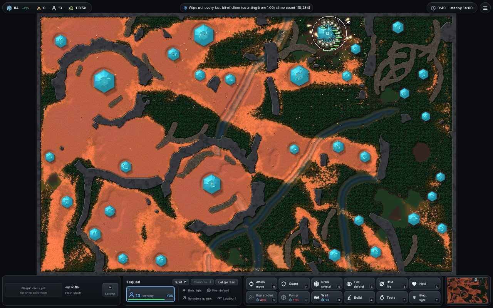
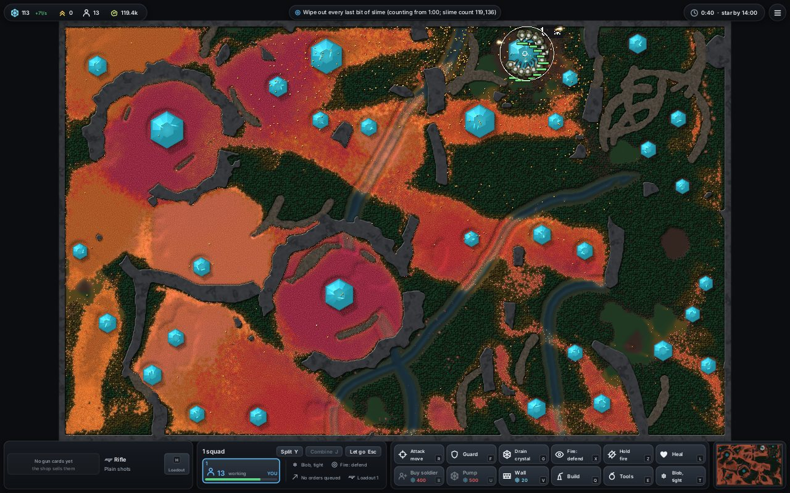
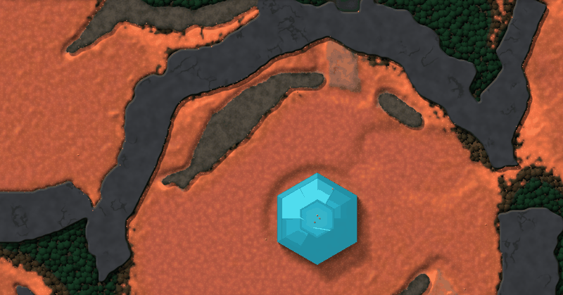
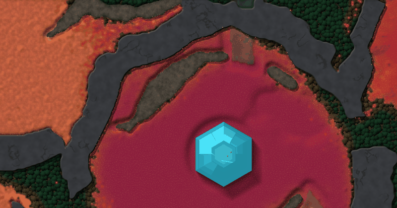
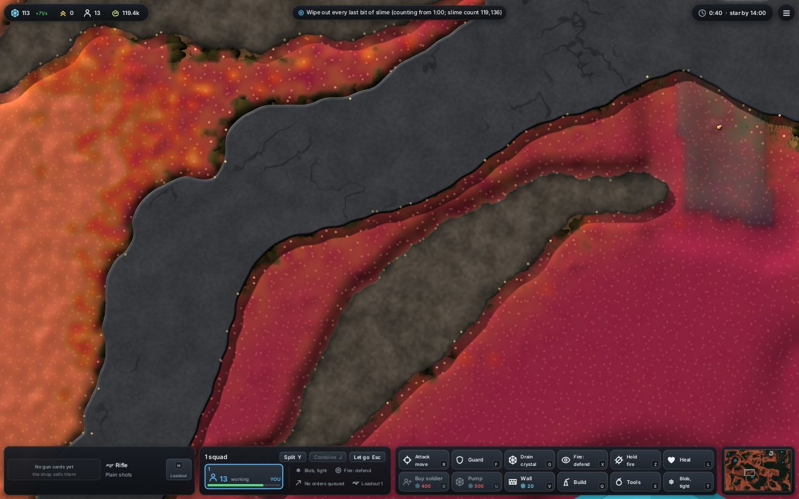

<title>Slime Levels</title>
<meta name="claude:viewport-fit-sides" content="cover">
<link rel="stylesheet" href="https://fonts.googleapis.com/css2?family=Inter:wght@400;600&family=Space+Grotesk:wght@500;700&display=swap">
<style>
/* Layout: one column of before/after pairs, each pair side by side on wide screens */
:root { --bg: #f6f3f1; --fg: #1d1716; --muted: #6b605d; --card: #ffffff; --line: #e2d9d5; --accent: #b3263a;
  --display: "Space Grotesk", system-ui, sans-serif; --body: "Inter", system-ui, sans-serif; }
@media (prefers-color-scheme: dark) { :root:not([data-theme="light"]) { --bg: #161212; --fg: #f1e9e6; --muted: #a8998f; --card: #201a19; --line: #3a302e; --accent: #e0566b; color-scheme: dark } }
:root[data-theme="dark"] { --bg: #161212; --fg: #f1e9e6; --muted: #a8998f; --card: #201a19; --line: #3a302e; --accent: #e0566b; color-scheme: dark }
body { background: var(--bg); color: var(--fg); font-family: var(--body); font-size: 15px; line-height: 1.55;
  padding-left: max(16px, env(safe-area-inset-left, 0px)); padding-right: max(16px, env(safe-area-inset-right, 0px)); padding-block: 28px 48px; }
main { max-width: 1180px; margin: 0 auto; display: grid; gap: 28px; }
h1, h2 { font-family: var(--display); text-wrap: balance; margin: 0; }
h1 { font-size: 2rem; }
h2 { font-size: 1.2rem; }
p { margin: 0; max-width: 68ch; }
.lede { color: var(--muted); }
.pair { display: grid; grid-template-columns: 1fr 1fr; gap: 14px; }
@media (max-width: 760px) { .pair { grid-template-columns: 1fr; } }
figure { margin: 0; background: var(--card); border: 1px solid var(--line); border-radius: 6px; padding: 8px; display: grid; gap: 6px; min-width: 0; }
figure img { width: 100%; height: auto; display: block; border-radius: 3px; }
figcaption { font-size: 0.85rem; color: var(--muted); }
figcaption b { color: var(--fg); }
section { display: grid; gap: 12px; }
.levels { display: flex; flex-wrap: wrap; gap: 6px; }
.sw { display: flex; align-items: center; gap: 6px; font-size: 0.8rem; color: var(--muted); font-variant-numeric: tabular-nums; }
.sw i { width: 22px; height: 14px; border-radius: 3px; display: inline-block; }
</style>
<main>
  <header style="display:grid;gap:8px">
    <h1>Slime levels</h1>
    <p class="lede">Every crystal has a level now. Slime born on a crystal takes that crystal's level and colour, and its children keep it as they spread. Higher levels take more hits, move faster and bite harder. Run seed 1, step 7 of 12 (the Sporer, levels 0 to 4), at 0:40, the same game on main and on the change.</p>
    <div class="levels" aria-label="Level colours">
      <span class="sw"><i style="background:rgb(240,166,63)"></i>0</span>
      <span class="sw"><i style="background:rgb(238,112,36)"></i>1</span>
      <span class="sw"><i style="background:rgb(220,58,32)"></i>2</span>
      <span class="sw"><i style="background:rgb(178,26,38)"></i>3</span>
      <span class="sw"><i style="background:rgb(140,20,58)"></i>4</span>
      <span class="sw"><i style="background:rgb(112,26,96)"></i>5</span>
      <span class="sw"><i style="background:rgb(80,30,120)"></i>6</span>
      <span class="sw"><i style="background:rgb(52,22,92)"></i>7</span>
    </div>
    <p class="lede">Each level adds half a hit, 6% speed and 0.3 of a walker's bite. Planet 1 is all level 0; the home world reaches 7. These are base colours: the renderer's lighting makes the slime brighter than the swatches.</p>
  </header>
  <section>
    <h2>The whole planet</h2>
    <div class="pair">
      <figure><figcaption><b>Before.</b> One colour everywhere. Slime count 118,284.</figcaption></figure>
      <figure><figcaption><b>After.</b> Each crystal's territory in its level's colour; the home crystal (upper left) is the darkest. Slime count 119,136.</figcaption></figure>
    </div>
  </section>
  <section>
    <h2>In motion, zoom 6</h2>
    <div class="pair">
      <figure><figcaption><b>Before.</b> 0:40 to 0:42, 0.2 s a frame.</figcaption></figure>
      <figure><figcaption><b>After.</b> Where two crystals' slime meet, the colour runs between them as the walkers mix. No line is drawn.</figcaption></figure>
    </div>
  </section>
  <section>
    <h2>Close, zoom 12</h2>
    <div class="pair">
      <figure><figcaption><b>After.</b> Level 1 orange (left) beside level 4 wine (right).</figcaption></figure>
    </div>
  </section>
</main>
